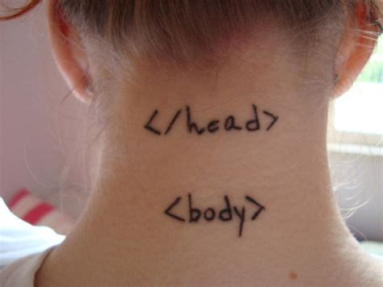

Notre vocable web est composé de néologismes en français, mais pas en anglais.
Il est une métaphore du monde physique, dont le sens est perdu en français.
Globalement on est nuls pour inventer.
Le vocable primordial 🪴
Ce vocabulaire et son histoire sont pourtant indispensables pour notre industrie :
parler le même langage et conserver son histoire contribue à
fonder une culture.
Il faut cultiver notre jardin jargon web.
Pensée ↔ Langage
C’est lié à ce que Vygotski appelait la
dialectique pensée-langage :
c’est un cercle vertueux ♻
alliant ces deux compétences.
Vous prendrez bien quelques anecdotes, pour la route ?
World Wide Web 🌐
La toile d’ampleur mondiale
Utiliser le terme anglais est certes un néologisme intéressant mais on perd
cette image de réseau savamment orchestré pour ne plus se représenter qu’une masse
informe et bordélique. On va « sur le web ».
D’où l’ajout du « e » devant le terme, pour dissocier le courrier électronique
du courrier papier. Notez que ce néologisme existe en français :
le courriel.
Une palanquée de termes filent la métaphore : adresse, route, etc.
Où colle-t-on le timbre, sur un courriel ?
Spam™
Du 🐖 en conserve
Ce terme est utilisé en référence à
un sketch éponyme des Monty Python
dans lequel un restaurant ne sert que
des conserves de la marque Spam,
incontournable de l’après 2nde Guerre Mondiale.
Loquet de sécurité à glissière, portant le texte « Slide »
— littéralement « glisser ».
Carousel 🎠
Carrousel
Un manège, quoi. Sauf que les vrais carrousels attendent
que les gens aient embarqué pour démarrer !
Expert accessibilité auditant un carrousel.
Library 📚
Bibliothèque
À la librairie, on s’approprie tandis qu’à la bibliothèque, on emprunte.
Le rapport entre l’open-source
et notre mauvais usage de ce terme est intéressant, vous ne trouvez pas ?
npm install, allégorie.
Framework 🖼
Coffrage, charpente
Dans le BTP, « a wooden framework » est un cadre en bois,
allant de la charpente au simple coffrage.
Le terme français cadriciel (par opposition au logiciel) est un pur néologisme mais
a le mérite d’utiliser la racine pertinente : le cadre.
Mémorial de La Hougue Bie, Jersey.Support à la construction d’une arche.
Ça peut être long…
Que l’on évoque HTML, CSS, JavaScript, PHP, les motifs de conception ou
les réseaux sociaux, notre jargon est constitué d’une pléthore de métaphores.
C’est le fondement de la sémantique.

Ah.
Morale 🔚
Les objets et interactions que nous avons évoqués, ordinaires dans l’univers physique anglo-saxon, confèrent
à leurs ersatz numériques leur affordance : ce sont des interfaces éprouvées.
Mais la transposition en français atténue cette affordance naturelle.
Un daily ordinaire
En quête de sens 🔎
Comprendre les images mobilisées est crucial
Le motif de conception ARIA le plus répandu est le disclosure,
qui signifie divulgation. Autrement plus explicite que collapse,
qui veut dire « effondrement » ou « écroulement », ou encore que les termes « Plier / déplier »
et autre tentative de baptême du composant.
Ici, autre exemple, <details> et <summary> sont sans
équivoque : un résumé et un détail.
Conclusion
Naming things is hard
Heureusement dans nos métiers, il y a énormément de choses que nous n’avons pas besoin de nommer.
Apprenons notre vocabulaire !